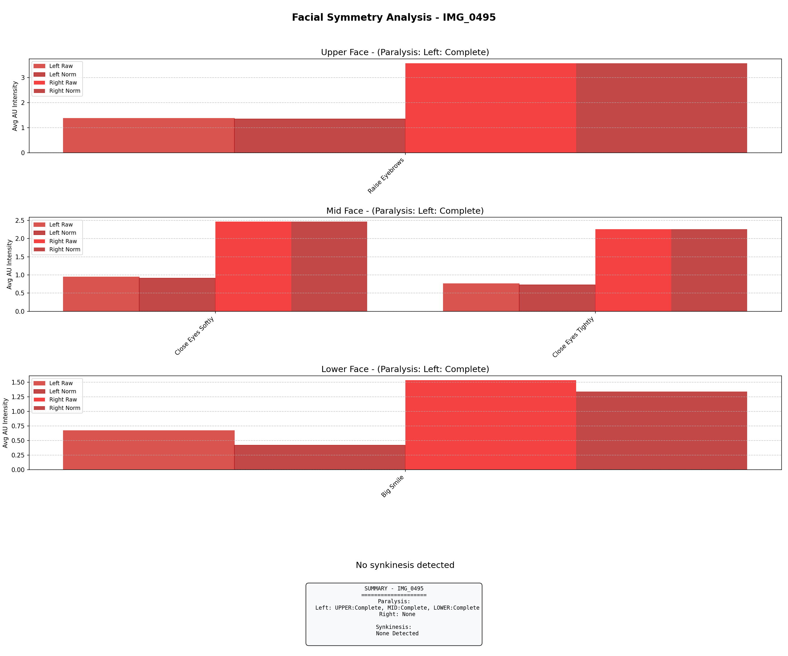
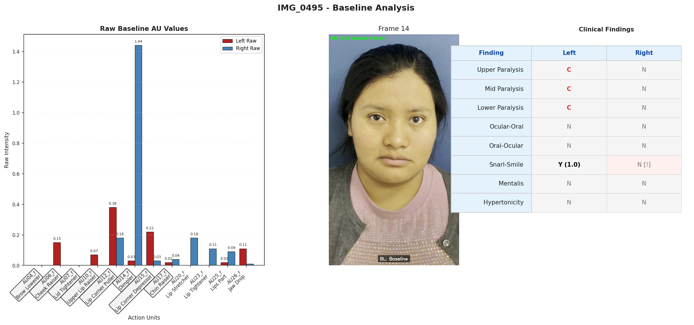
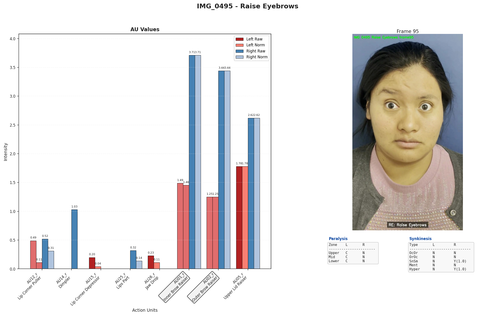
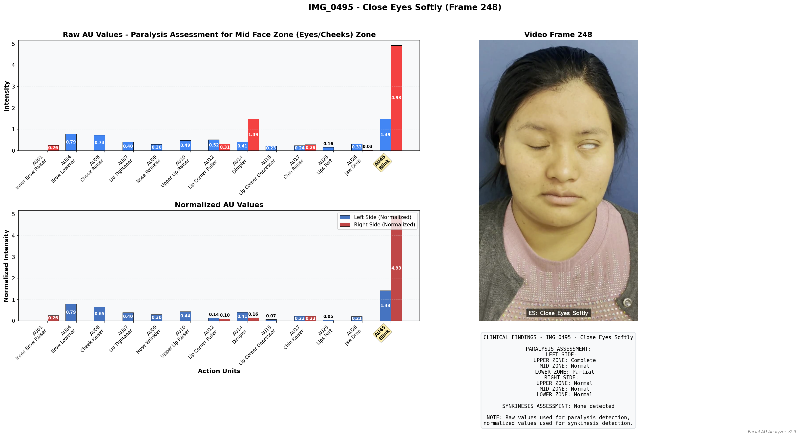
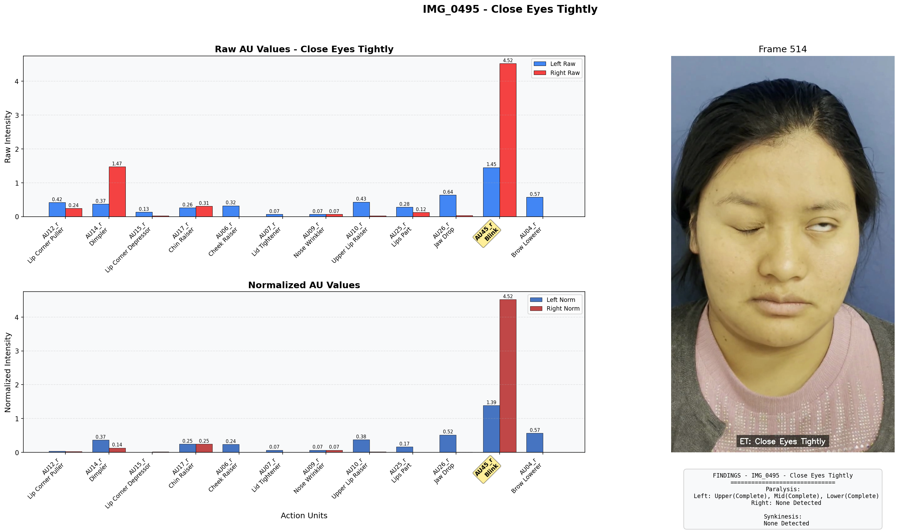
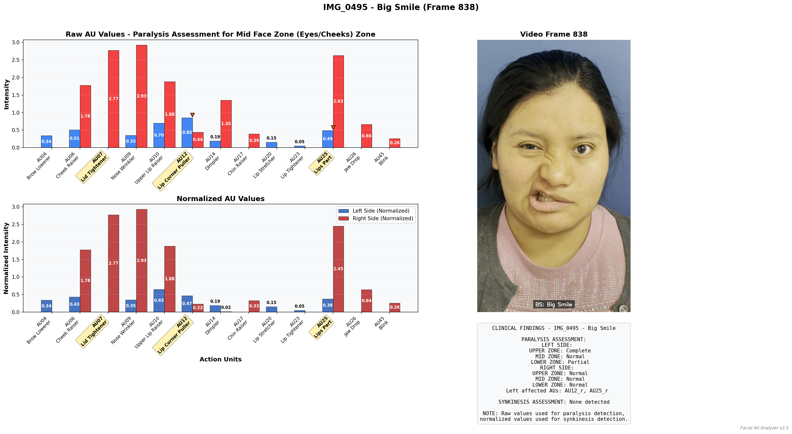

Facial Analysis Dashboard - IMG_0495
Summary Findings
Condition
Status
Facial Paralysis
Detected
Synkinesis (Incl. Hypertonicity)
Detected
Clinical Findings Detail
Finding
Left
Right
Upper Paralysis
N
N
Mid Paralysis
N
N
Lower Paralysis
N
N
Ocular-Oral
N
N
Oral-Ocular
N
N
Snarl-Smile
Y
(1.0)
N
[!]
Mentalis
N
N
Hypertonicity
N
N
Symmetry Analysis

Key Action Visualizations
Baseline

Raise Eyebrows

Close Eyes Softly

Close Eyes Tightly

Big Smile
